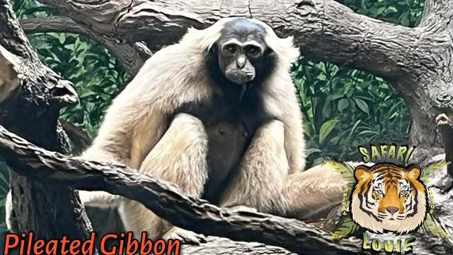

Boo, a Pileated Gibbon
Cincinnati Zoo & Botanical Garden · New species unlocked
New species unlocked! Boo is a pileated gibbon, a new arrival at Cincinnati Zoo, with cream-coloured fur and a dark face, watching from the branches. I love finding a new species to photograph, and Boo was worth the wait. Here is my first photo of Boo.

New species unlocked — Boo, a pileated gibbon, a new arrival at Cincinnati Zoo.
My photo shows Boo seated on thick branches among green foliage, looking toward the camera — light cream fur on the body and limbs, with the dark face and chest the species is known for.
I posted this on Facebook — open the original post →